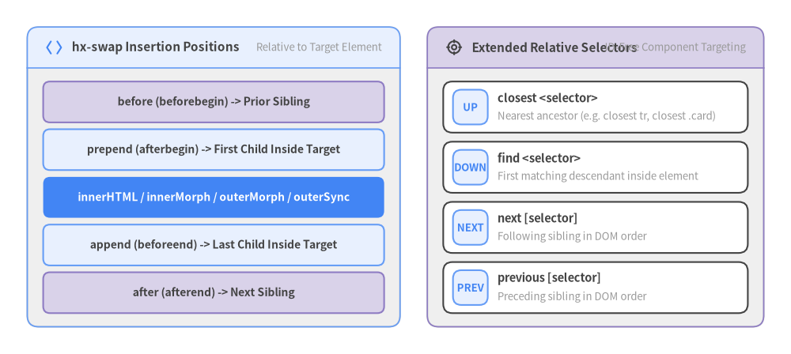
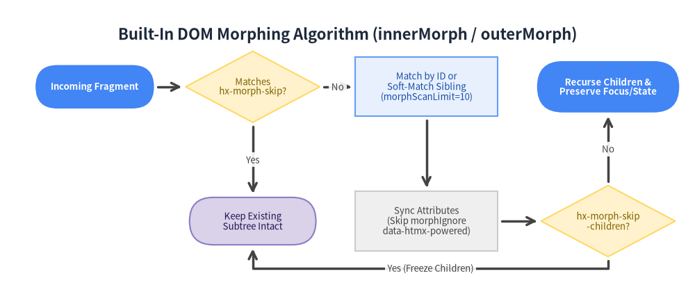

4. ターゲット指定とスワップ (Targeting & Swapping)
サーバーから HTML フラグメントが返却されると、htmx v4.0.1 は拡張相対 CSS セレクタ（hx-target）によってどこに配置するかを決定し、スワップ戦略（hx-swap、組み込み DOM モーフィング、hx-preserve、View Transitions API）によってどのようにライブ DOM へ統合するかを制御します。

Source Code
from drawlib.canvas import save, setup
from drawlib.icons import phosphor
from drawlib.smartarts import CardList, GridLayout, Panel
from drawlib.styles import Styles
setup(width=174, height=78)
# Left Panel: DOM Swap Insertion Geometry
left_panel = Panel(
"hx-swap Insertion Positions",
"Relative to Target Element",
style=Styles.Neutral,
header_style=Styles.PrimaryNeutral.patch(shape_line_width=1.2),
text_style=Styles.DarkBold.patch(text_size=11.0),
description_style=Styles.Muted.patch(text_size=9.5),
icon=phosphor.brackets_angle,
icon_style=Styles.PrimaryBold,
header_variant="filled",
header_height=9.0,
)
left_panel.draw((6.0, 6.0), width=82.0, height=66.0, align="bottom_left")
l_xy, l_w, l_h = left_panel.get_content_box((6.0, 6.0), width=82.0, height=66.0, padding=(3.5, 3.0))
grid = GridLayout(
num_column=1,
num_row=5,
style=Styles.White.patch(shape_r=1.5),
text_style=Styles.DarkBold.patch(text_size=10.0),
)
grid.add((0, 4), 1, 1, text="before (beforebegin) -> Prior Sibling", style=Styles.SecondaryNeutral.patch(shape_r=1.5))
grid.add((0, 3), 1, 1, text="prepend (afterbegin) -> First Child Inside Target", style=Styles.PrimaryNeutral.patch(shape_r=1.5))
grid.add(
(0, 2),
1,
1,
text="innerHTML / innerMorph / outerMorph / outerSync",
style=Styles.PrimaryFlat.patch(shape_r=1.5),
text_style=Styles.WhiteBold.patch(text_size=10.0),
)
grid.add((0, 1), 1, 1, text="append (beforeend) -> Last Child Inside Target", style=Styles.PrimaryNeutral.patch(shape_r=1.5))
grid.add((0, 0), 1, 1, text="after (afterend) -> Next Sibling", style=Styles.SecondaryNeutral.patch(shape_r=1.5))
grid.draw(l_xy, width=l_w, height=l_h, margin=1.5)
# Right Panel: Extended Relative CSS Selectors
right_panel = Panel(
"Extended Relative Selectors",
"ID-Free Component Targeting",
style=Styles.Neutral,
header_style=Styles.SecondaryNeutral.patch(shape_line_width=1.2),
text_style=Styles.DarkBold.patch(text_size=11.0),
description_style=Styles.Muted.patch(text_size=9.5),
icon=phosphor.crosshair,
icon_style=Styles.DarkBold,
header_variant="filled",
header_height=9.0,
)
right_panel.draw((94.0, 6.0), width=74.0, height=66.0, align="bottom_left")
r_xy, r_w, r_h = right_panel.get_content_box((94.0, 6.0), width=74.0, height=66.0, padding=(3.5, 3.0))
sel_cards = CardList(
style=Styles.White,
text_style=Styles.DarkBold.patch(text_size=10.5),
description_style=Styles.Muted.patch(text_size=9.5),
badge_style=Styles.PrimaryNeutral,
badge_text_style=Styles.PrimaryBold.patch(text_size=9.5),
spacing=2.0,
)
sel_cards.add("closest <selector>", "Nearest ancestor (e.g. closest tr, closest .card)", badge_text="UP")
sel_cards.add("find <selector>", "First matching descendant inside element", badge_text="DOWN")
sel_cards.add("next [selector]", "Following sibling in DOM order", badge_text="NEXT")
sel_cards.add("previous [selector]", "Preceding sibling in DOM order", badge_text="PREV")
sel_cards.draw(r_xy, width=r_w, height=r_h)
save()
4.1 拡張相対 CSS セレクタ (hx-target)
標準の CSS セレクタ（#results, .panel）に加え、htmx v4.0.1 ではループ生成されるテーブル行や再利用可能なコンポーネントでグローバル ID を不要にする 拡張相対 CSS セレクタ が hx-target、hx-include、hx-indicator、hx-disable、htmx.find() で利用できます。
| セレクタ構文 | 探索スコープ | 実践的なユースケース |
|---|---|---|
this |
属性を持つ要素自身（:inherited の場合はその親要素）。 |
インプレース編集カードで自分自身を置換する場合。 |
closest <selector> |
最も近い祖先要素を上方向に探索（element.closest(sel)）。 |
テーブル内のボタンから hx-target="closest tr" で行全体を更新。 |
find <selector> |
要素内部の最初の子孫要素を探索（element.querySelector(sel)）。 |
<form> 上で hx-disable="find button, find input" を指定。 |
next [selector] |
文書順で後続する最初の要素（または直後の兄弟要素）を探索。 | <input> の直後にある hx-target="next .validation-msg" へエラー表示。 |
previous [selector] |
文書順で先行する最初の要素（または直前の兄弟要素）を探索。 | ボタンの直前にある hx-target="previous output" の数値を更新。 |
<!-- Zero global IDs needed across repeating table rows -->
<table>
<tbody>
<tr>
<td>Invoice #1042</td>
<td class="row-status">Pending</td>
<td>
<button hx-post="/invoices/1042/approve"
hx-target="closest tr"
hx-swap="outerMorph">
Approve
</button>
</td>
</tr>
</tbody>
</table>
4.2 全12種の hx-swap スワップ戦略リファレンス
htmx v4.0.1 では、コア組み込みの DOM モーフィング（innerMorph, outerMorph, outerSync）、HTML パースを行わない安全なテキスト置換（textContent）、直感的な短縮名（before, prepend, append, after）が揃っています。
hx-swap の値 |
互換エイリアス | DOM 操作と状態保持の挙動 |
|---|---|---|
innerHTML (デフォルト) |
— | ターゲット要素の子ノードすべてをレスポンス HTML で置換する。 |
outerHTML |
— | ターゲット要素自体を含めて丸ごとレスポンス HTML で置換する。 |
outerSync |
— | v4 新機能: ターゲット要素自身の属性のみをモーフィング同期し、子要素は innerHTML で置換する（要素参照を維持）。 |
innerMorph |
— | v4 新機能: ターゲットの子要素を差分モーフィングし、フォーカス・入力値・スクロール位置・アニメーションを維持する。 |
outerMorph |
— | v4 新機能: ターゲット要素自身とその子要素すべてを差分モーフィングする。 |
textContent |
— | v4 新機能: HTML パースを行わず target.textContent としてプレーンテキストを直接設定する。 |
before |
beforebegin |
ターゲット要素の直前（前の兄弟要素）に挿入する。 |
prepend |
afterbegin |
ターゲット要素内部の先頭（最初の子要素の前）に挿入する。 |
append |
beforeend |
ターゲット要素内部の末尾（最後の子要素の後）に挿入する。 |
after |
afterend |
ターゲット要素の直後（次の兄弟要素）に挿入する。 |
delete |
— | レスポンス内容にかかわらず、通信完了後にターゲット要素を DOM から削除する。 |
none |
— | メインターゲットのスワップを行わない（<hx-partial> や hx-swap-oob、ヘッダー処理は実行される）。 |
4.3 組み込み DOM モーフィング (innerMorph & outerMorph)
htmx 2 では DOM モーフィングに idiomorph などの外部拡張が必要でしたが、htmx v4.0.1 ではモーフィングエンジンがコアに標準統合されました。hx-swap="innerMorph" または hx-swap="outerMorph" を指定すると、既存の DOM ノードを破棄せず差分のみを反映します。

Source Code
from drawlib import canvas
from drawlib.diagrams.flow import Decision, End, FlowDiagram, Process, Start
from drawlib.styles import Styles
canvas.clear()
canvas.setup(width=176, height=78)
flow = FlowDiagram(
node_style=Styles.Neutral.patch(text_size=9.5),
edge_style=Styles.DarkBold,
edge_text_style=Styles.Dark.patch(text_size=9.5),
title="Built-In DOM Morphing Algorithm (innerMorph / outerMorph)",
)
start = flow.add(Start("Incoming Fragment", width=30, height=11, style=Styles.PrimaryFlat.patch(text_size=9.5), text_style=Styles.WhiteBold.patch(text_size=9.5)), xy=(20, 52))
skip_chk = flow.add(Decision("Matches\nhx-morph-skip?", width=34, height=18, style=Styles.WarningNeutral.patch(text_size=9.5)), xy=(60, 52))
keep_node = flow.add(End("Keep Existing\nSubtree Intact", width=32, height=12, style=Styles.SecondaryNeutral.patch(text_size=9.5)), xy=(60, 18))
id_match = flow.add(Process("Match by ID or\nSoft-Match Sibling\n(morphScanLimit=10)", width=36, height=15, style=Styles.PrimaryNeutral.patch(text_size=9.5)), xy=(104, 52))
sync_attr = flow.add(Process("Sync Attributes\n(Skip morphIgnore\ndata-htmx-powered)", width=36, height=15, style=Styles.Neutral.patch(text_size=9.5)), xy=(104, 18))
skip_child = flow.add(Decision("hx-morph-skip\n-children?", width=34, height=18, style=Styles.WarningNeutral.patch(text_size=9.5)), xy=(150, 18))
done = flow.add(End("Recurse Children &\nPreserve Focus/State", width=36, height=13, style=Styles.PrimaryFlat.patch(text_size=9.5), text_style=Styles.WhiteBold.patch(text_size=9.5)), xy=(150, 52))
start.connect(skip_chk, padding=1.0)
skip_chk.connect(keep_node, label="Yes", start_side="bottom", end_side="top", padding=1.0)
skip_chk.connect(id_match, label="No", start_side="right", end_side="left", padding=1.0)
id_match.connect(sync_attr, start_side="bottom", end_side="top", padding=1.0)
sync_attr.connect(skip_child, start_side="right", end_side="left", padding=1.0)
skip_child.connect(keep_node, label="Yes (Freeze Children)", start_side="bottom", end_side="bottom", padding=1.0).via((150, 6), (60, 6))
skip_child.connect(done, label="No", start_side="top", end_side="bottom", padding=1.0)
flow.draw(xy=(4.0, 4.0))
canvas.save()
モーフィングが保持する状態と重要な注意点
- 保持される状態: キーボードフォーカス、テキスト選択範囲、
<input>の入力値、スクロール位置、再生中の<video>/<audio>、CSS トランジション、既存要素に付与されたイベントリスナー。 - ID 優先マッチング: 同じ
id属性を持つ要素は最優先で照合され、インプレースで更新されます（兄弟探索上限はhtmx.config.morphScanLimit = 10）。
[!WARNING] モーフィングはユーザーが入力中の
<input>値を意図的に保持します！ フォーム送信後に入力欄を初期状態（空欄）へリセットしたい場合は、innerMorph/outerMorphではなくinnerHTML、outerHTML、またはouterSyncを使用してください。
モーフィング対象からの除外 (hx-morph-skip & hx-morph-skip-children)
Web Components やリッチテキストエディタ、ドラッグ＆ドロップ可能なコンテナなどをモーフィング対象から保護するには、以下の属性またはグローバル設定（htmx.config.morphSkip / morphSkipChildren）を使用します。
<div id="dashboard" hx-get="/dashboard/poll" hx-trigger="every 5s" hx-swap="innerMorph">
<!-- 1. Freeze the entire element (neither attributes nor children are touched) -->
<canvas id="webgl-viewport" hx-morph-skip></canvas>
<!-- 2. Update outer attributes from server, but leave internal DOM children untouched -->
<sortable-kanban data-column-count="4" hx-morph-skip-children>
<div class="card">Client-dragged card order stays intact</div>
</sortable-kanban>
</div>
4.4 スワップ修飾子・hx-preserve・View Transitions API
hx-swap の値の後ろにスペース区切りで修飾子を追加することで、タイミング・スクロール・ラッパー除去・View Transitions を細かく制御できます。
| スワップ修飾子 | 記述例 | 動作仕様 |
|---|---|---|
swap:<time> |
innerHTML swap:150ms |
htmx-swapping クラス適用後、DOM 挿入まで <time> 待機する。 |
settle:<time> |
innerHTML settle:200ms |
DOM 挿入から htmx-settling 解除までの待機時間（デフォルト 1ms）。 |
transition:true |
outerMorph transition:true |
DOM 更新をブラウザの document.startViewTransition() でラップする。 |
scroll:top|bottom |
innerHTML scroll:top |
スワップ後にターゲット（または scrollTarget:<sel>）を上端/下端へスクロールする。 |
show:top|bottom |
afterend show:bottom |
ターゲット（または showTarget:<sel>）が画面内に収まるようビューポートをスクロールする。 |
focusScroll:true |
innerHTML focusScroll:true |
スワップ後にフォーカスを持つ要素が画面内に入るよう自動スクロールする。 |
ignoreTitle:true |
innerHTML ignoreTitle:true |
レスポンス内の <title> タグによる document.title 更新を無視する。 |
strip:true |
innerHTML strip:true |
レスポンス HTML の最外殻ラッパー要素を取り除いてからスワップする。 |
swapEmpty:true |
innerHTML swapEmpty:true |
<hx-partial> や OOB のみで本文が空になった場合でも強制的にメインスワップを実行する。 |
target:<selector> |
outerHTML target:#modal |
hx-swap 指定内でスワップ先ターゲットを上書きする。 |
innerHTML スワップ間で特定要素を保持する (hx-preserve)
モーフィングではなく innerHTML や outerHTML を使う場合でも、一意な id と hx-preserve="true"（または属性値なしの hx-preserve）を持つ要素は、スワップ後の新しい DOM ツリーへそのまま移植され、動画再生や iframe の状態が途切れません。
<div id="lesson-container" hx-get="/lessons/next" hx-swap="innerHTML transition:true">
<!-- Video continues playing uninterrupted when #lesson-container swaps -->
<video id="lecture-stream" hx-preserve="true" src="/streams/intro.mp4" controls></video>
<article id="lesson-notes">Chapter 1 Notes...</article>
</div>